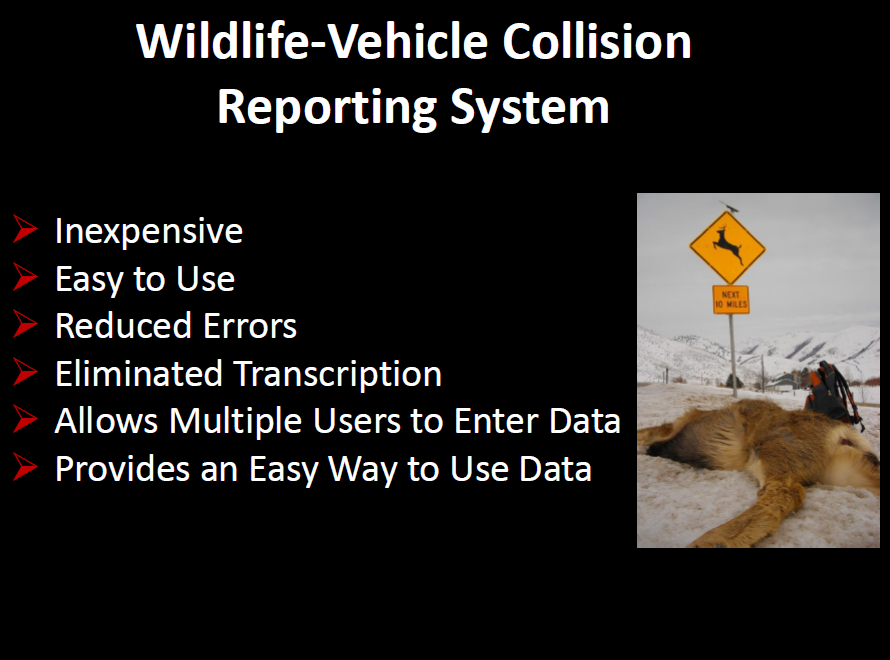

Objectives
Project Intro
Mobile
Desktop
Project Intro
Mobile
Desktop
 Lessons Learned
Lessons Learned
- Techolongy Stack
- Inspire (David & Goliath)
"I can do anything."
Why All This Fuss About Roadkill?
Citizen and Wildlife Projection
Mitigation Planning


Photos © P.Cramer USU, UDWR, UDOT
Herd Health Tracking
(Xyphoid Fat Measurement)



Roadkill Reporter
vs.
Wildlife-Vehicle Collision Reporter
Nail down a project name before you begin!
Performance & Stability
Easy Access to Device Hardware
Enterprise Distribution is a Pain
Platform-specific Development Environment
Slow Updates
Single Codebase on All Devices
Re-use Existing Web Skills
Instant Install & Updates
Limited OS Access
Single Codebase & App Store
Better OS Access
Distribution & Updates
It's Dojo!
Native Look & Feel
Phonegap Ready
Wasn't Mature in 2011 (dojo 1.6)
Momentum & Maturity
Simple
jQuery
Drum Roll Please...
HTML5 Geolocation API
var timerid = navigator.geolocation.watchPosition(function(pos){
that.processPosition(pos);
}, function(er) {
...
navigator.geolocation.clearWatch(timerid);
navigator.geolocation.watchPosition(function(pos){
that.processPosition(pos);
}, function(er){...},
{timeout: 10000, enableHighAccuracy: false});
}, {
enableHighAccuracy: true
});
Use watchPosition() instead of getCurrentPosition() for higher accuracy.
Offline/Cache Manifest
<html manifest="roadkill.appcache">
Increment version number in manifest file.
Don't bother with it during active development.
Performance
roadkill.appcache
CACHE MANIFEST
# Version: 77
CACHE:
css/core.css
css/images/ajax-loader.png
css/images/icons-18-white.png
css/images/icons-18-black.png
css/images/icons-36-white.png
css/images/icons-36-black.png
css/jquery.mobile-1.0.min.css
images/icon.png
images/splash.png
dojo.js
roadkill_en-us.js
roadkill.js
index.html
NETWORK:
*
LocalStorage
used to store reports offline for later submission to server.
Web Inspector Remote (Weinre)
- Allowed me to debug my client's phone from 90 miles away.
- Allowed me to debug my own phone from a few feet away.
- Viewer
- Manual Report Entry
- Filter & Download Data
Twitter's Bootstrap
Be careful with css collisions with ESRI's JavaScript API.
input, textarea {
-webkit-transform-style: preserve-3d;
}
.btn {
-webkit-transform-style: preserve-3d;
}
Drum Roll Please...
Python GP Web Services
Pass in all parameters; pass "" for optional params.
Make sure to specify a scheme (in ArcCatalog) for all input parameters of type FeatureSet.
import arcpy
'''
GP Parameters
0 - route
1 - fromMP
2 - toMP
3 - outSegment - FeatureSet
'''
arcpy.env.overwriteoutput = True
# variables
route = arcpy.GetParameterAsText(0)
fromMP = float(arcpy.GetParameterAsText(1))
toMP = float(arcpy.GetParameterAsText(2))
"You'll be famous!" - @MattAGRC
Scott Davis, Utah AGRC
Presentation built with impress.js
(dramamine not included).
Wrench icon by http://dryicons.com
David and Goliath © By Intellectual Reserve, Inc. Used by permission.
Wrench icon by http://dryicons.com
David and Goliath © By Intellectual Reserve, Inc. Used by permission.